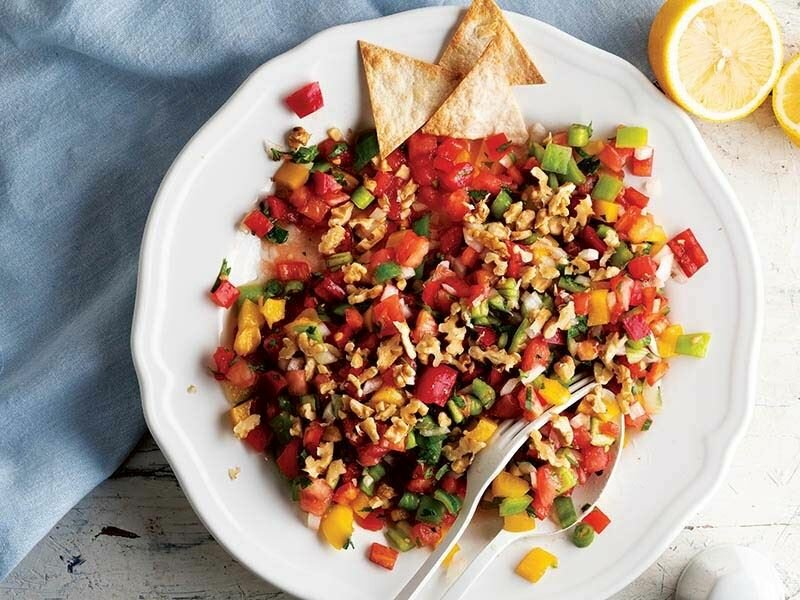

SOĞUKLAR / STARTERS IN OLIVE OIL Közlenmiş patlıcan salatası Zeytinyağlı Fasulye Pilaki Zeytinyağlı yaprak sarma
SALATALAR / SALAD İnce kıyım salata Körpe roka salata ekstra virgin zeytinyağ & limon Cevizli kaşık salata nar ekşili 